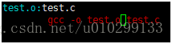
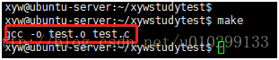
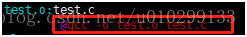
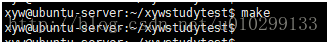

# 内置变量（Implicit Variables）
Make 命令提供一系列内置变量，比如，(MAKE) 指向当前使用的 Make 工具。这主要是为了跨平台的兼容性，详细的内置变量清单见手册。
output:
$(CC) -o output input.c
# 自动变量（Automatic Variables）
# $@
@ ** 就指代 ** foo`**。
a.txt b.txt:
touch $@
等同于下面的写法。
a.txt:
touch a.txt
b.txt:
touch b.txt
# $<
< 就指代 p1。
a.txt: b.txt c.txt
cp $< $@
等同于下面的写法。
a.txt: b.txt c.txt
cp b.txt a.txt
# $?
? 就指代 p2。
# $^
$^ 指代所有前置条件，之间以空格分隔。比如，规则为 t: p1 p2，那么 $^ 就指代 p1 p2.
# $*
* 就表示 f1.
# 行首加上 @的作用
Makefile 文件中放置 @符号的作用是在 make 时不将这一行打印出来，因为在 Makefile 的默认中 make 时会打印这一行的字符串。
测试如下：
例如：在 gcc –o test.o test.c 这一行之前没有添加 @时，

执行 make 后，在终端有相应的打印信息。

当加上 @时：

执行 make：

终端上就不会有 gcc –o test.o test.c 的打印信息了.
# := ?= += = 的区别
- = 是最基本的赋值
- := 是覆盖之前的值
- ?= 是如果没有被赋值过就赋予等号后面的值
- += 是添加等号后面的值
# 通配符 *
通配符（wildcard）用来指定一组符合条件的文件名。Makefile 的通配符与 Bash 一致，主要有星号（*）、问号（？）和 [...] 。比如， *.o 表示所有后缀名为 o 的文件。
clean:
rm -f *.o
# 模式匹配 %
Make 命令允许对文件名，进行类似正则运算的匹配，主要用到的匹配符是 %。比如，假定当前目录下有 f1.c 和 f2.c 两个源码文件，需要将它们编译为对应的对象文件。
%.o: %.c
等同于下面的写法。
f1.o: f1.c
f2.o: f2.c
使用匹配符 %，可以将大量同类型的文件，只用一条规则就完成构建。
reference: https://istio.io/latest/docs/tasks/security/cert-management/plugin-ca-cert/#plug-in-certificates-and-key-into-the-cluster
make -f ../tools/certs/Makefile.selfsigned.mk cluster1-cacerts
../tools/certs/Makefile.selfsigned.mk 一部分内容如下
%/intermediate.conf: L=$(dir $@)
%/intermediate.conf:
@echo "[ req ]" > $@
@echo "encrypt_key = no" >> $@
......